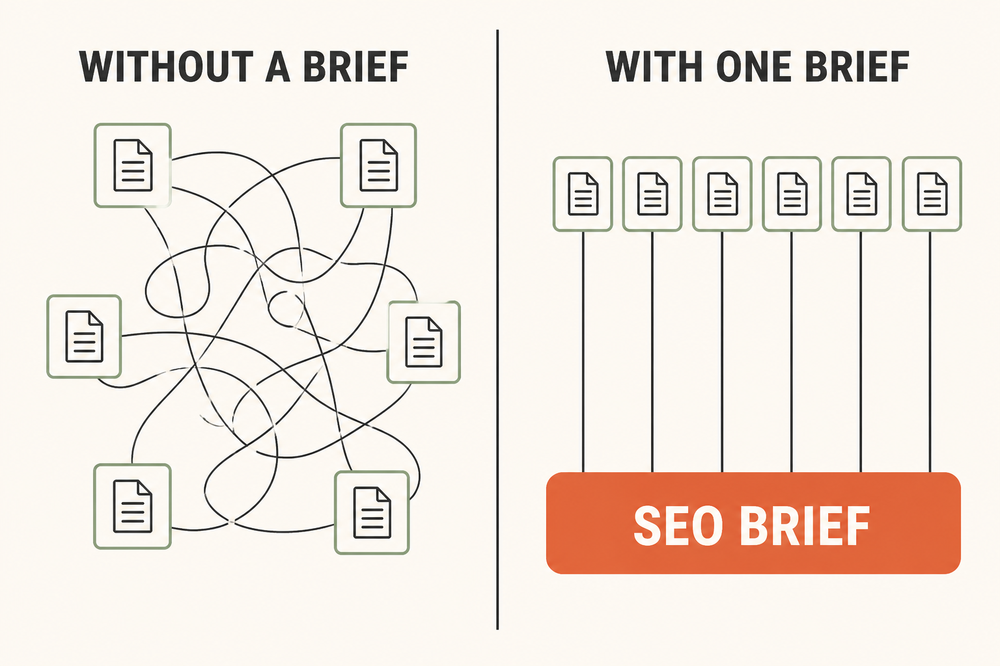
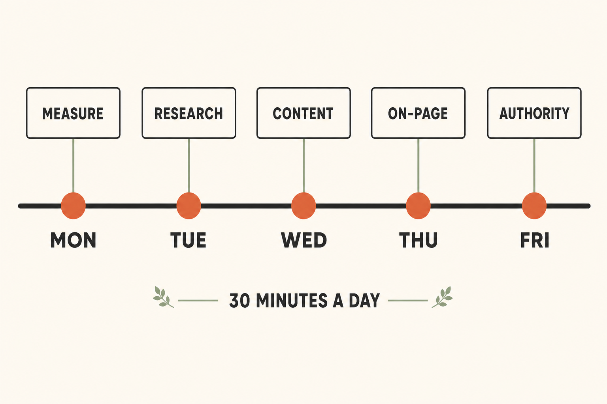
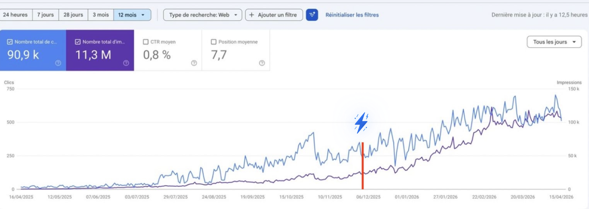
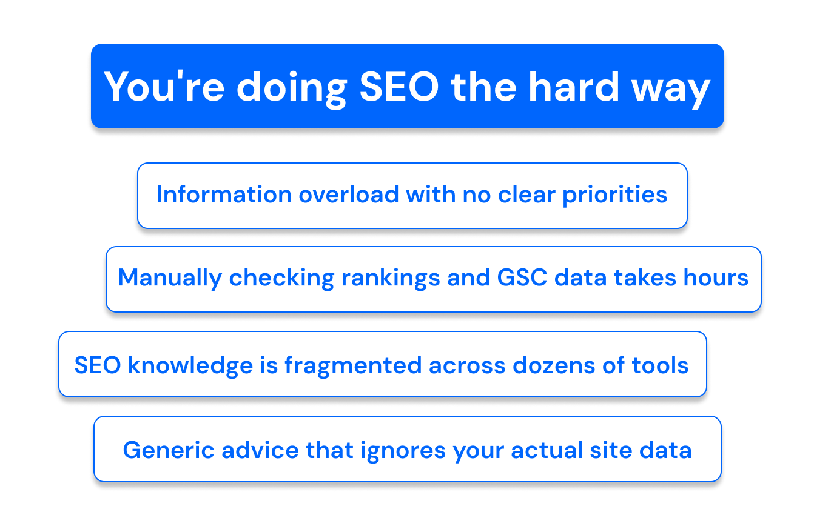
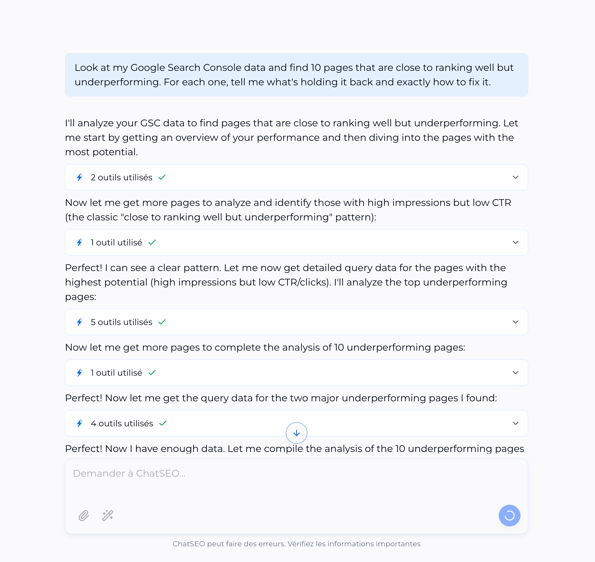
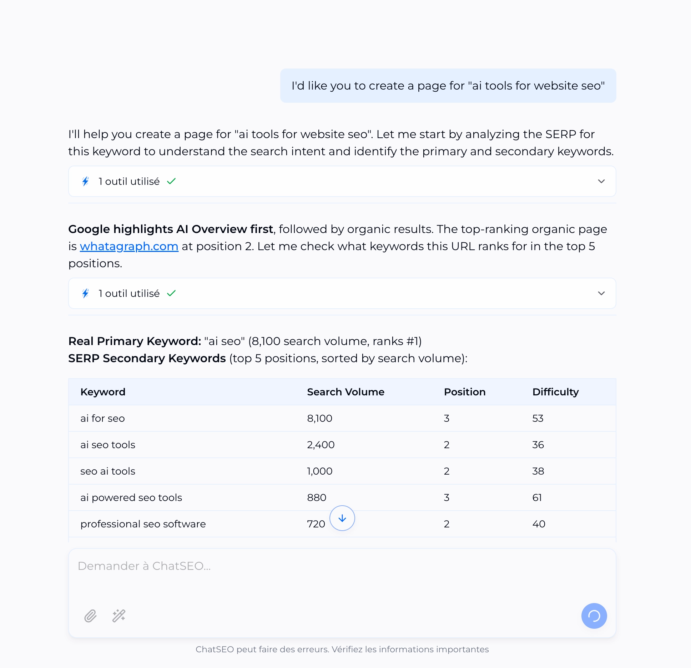
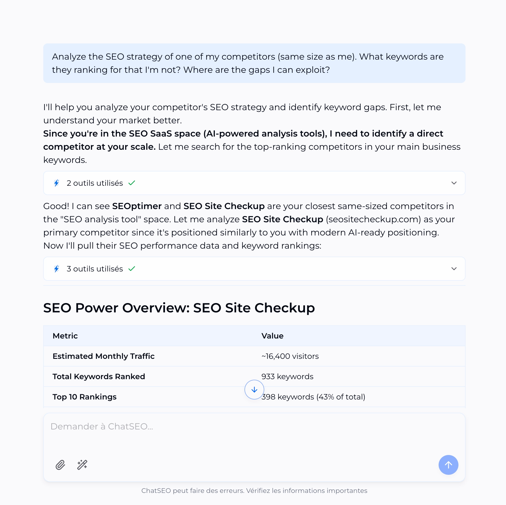

Six functions, one shared brief in the middle. That middle block is the whole trick.
Hey there, I'm Nicholas 👋
I grew my last B2C app to 15K Google clicks/month as a solo founder, then sold it. Turns out I fell in love with SEO along the way.
So now I'm building ChatSEO.app — an all-in-one SEO employee whose job is to make sure you rank #1 in Google and in AI search.
This department is exactly how I run it. Try it free →
Why most SEO prompting fails
It isn't the prompts. It's that you re-explain your business every single time.
You open a new chat, paste a decent prompt, and spend the first three messages describing what you sell, who buys it, and which competitors matter. The model gives generic advice because you gave it a generic starting point. Next task, new chat, same explanation.
Six functions run off one shared SEO Brief. Write it once. Every function starts already knowing your business.

Left: what a prompt library feels like. Right: what a department feels like.
Step 1 — Write the Brief
Ten minutes, once. Paste it at the top of any function below, or save it as a Claude Project instruction / ChatSEO memory so it's always there.
The SEO Brief · fill in and save
# SEO BRIEF — [company name]
SITE: [domain]
WHAT WE SELL: [one sentence, plain language, no jargon]
WHO BUYS IT: [job title or persona + the trigger that makes them look]
MARKET + LANGUAGE: [country/region, language]
PRICE POINT: [free / $X per month / $X one-off / enterprise]
MONEY PAGES (max 3, the ones that make revenue):
1. [url] — [what it's meant to rank for]
2. [url] — [what it's meant to rank for]
3. [url] — [what it's meant to rank for]
COMPETITORS WE ACTUALLY LOSE TO (max 3, real SERP rivals, not aspirational):
1. [domain] 2. [domain] 3. [domain]
BASELINE (today's numbers, so we can tell if anything works):
- Organic clicks/month: [number]
- Pages getting any traffic: [number]
- Best current keyword + position: [keyword, position]
ALREADY TRIED: [what didn't work, so nobody suggests it again]
CONSTRAINTS: [hours/week available, no dev access, CMS, budget]
RULES FOR EVERY ANSWER:
- Use the numbers above. If a number is missing, ask for it — never invent one.
- Recommend ONE next action, not a list of options.
- If you are not confident, say so and say what data would settle it.
The constraint is the product. Every prompt below ends in one action, not twenty recommendations. A list of twenty is how SEO advice becomes homework you never do.
One honest caveat. A Brief describes your business — it can't see your data. Paste it into any AI and you'll get good reasoning about a site the model has never looked at. Every prompt below therefore says "say unknown rather than guess", and you'll hit that line often.
That's the gap ChatSEO closes: it plugs into your Search Console and runs these six functions against your real positions, real queries and real competitors — so "unknown" becomes a number. Free to try, no card →
Step 2 — The six functions
Each one is a job, not a chat. Paste your Brief, then the prompt.
The failure mode here is a 200-keyword spreadsheet nobody acts on. This returns one keyword you can win next, with the reason it's winnable.
Run: weeklyReturns: 1 keyword + whyNeeds: Brief
Research
Using my SEO Brief, find the single best keyword for me to target NEXT.
Rules:
- It must be closer to page 1 than to page 10, or genuinely unserved by my competitors.
- Ignore anything where the SERP is dominated by sites 10x my authority.
- Ignore pure-informational terms that will never touch revenue.
Return exactly this, nothing else:
1. THE KEYWORD
2. Estimated monthly volume (say "unknown" if you can't verify — do not guess a number)
3. My current position, or "not ranking"
4. Who currently ranks 1-3, and the specific reason I can beat at least one of them
5. Which of my money pages should target it, or "needs a new page"
6. The ONE thing to do this week
Stop after point 6. Do not list alternatives.
2
Technical
Crawl audits, indexing, Core Web Vitals, schema.
Technical audits produce 60-item checklists where item 47 is the one that matters. This forces a single ranked fix, scored by impact against effort.
Run: monthlyReturns: 1 fixNeeds: Brief + crawl or GSC access
Technical
Using my SEO Brief, audit my site technically and return the ONE fix
with the highest impact-to-effort ratio.
Check in this order and stop at the first real problem:
1. Are my money pages indexed at all?
2. Is anything blocking crawl (robots.txt, noindex, canonical pointing away)?
3. Are there duplicate or near-duplicate versions competing?
4. Core Web Vitals on the money pages
5. Missing or broken structured data
Return exactly:
- THE PROBLEM (one sentence, in plain English)
- The exact page(s) affected
- Why it costs me traffic — connect it to a money page or say "indirect"
- The fix, as steps someone non-technical can hand to a developer
- How I verify it worked, and when to check
If you cannot verify something without data you don't have, say exactly
which report to pull. Do not assume. Do not list other issues.
3
Content
Topic clusters, briefs, drafting, refreshes.
Refreshing an existing page that already ranks 8-20 beats writing a new one almost every time. This checks that first before it lets you write anything.
Run: weeklyReturns: 1 briefNeeds: Brief + keyword from #1
Content
Using my SEO Brief, build the content brief for: [KEYWORD FROM RESEARCH]
FIRST, answer this before anything else:
Do I already have a page that should rank for this?
- If YES → this is a REFRESH. Tell me the page, the 3 specific things it's
missing versus the pages beating it, and stop there.
- If NO → this is a NEW PAGE. Continue below.
For a new page, return:
- Working title (under 60 characters)
- The search intent in one sentence: what does someone typing this actually want?
- The angle only I can credibly take, based on my Brief
- Section headings (H2s), max 6, in order
- The ONE proof point I must include — data, screenshot, example — or the
page is just another summary of what already ranks
- Word count target, with the reason for that number
Do not write the article. Do not give me three title options.
4
On-Page
Titles, meta, internal links, cannibalization.
The cheapest wins in SEO. No writing, no dev ticket — usually fifteen minutes of editing that moves a page already sitting on page two.
Using my SEO Brief, optimise this single page: [URL]
Return exactly:
1. CANNIBALIZATION CHECK — do any of my other pages target the same intent?
If yes, name them and say which page should win. This comes first because
every other fix is wasted if two of my pages are competing.
2. TITLE — the rewritten title tag, under 60 characters, with the reason
3. META DESCRIPTION — rewritten, under 155 characters, written to earn the
click rather than to describe the page
4. H1 — only if it should change from what's there
5. INTERNAL LINKS IN — 3 existing pages of mine that should link TO this page,
with the anchor text for each
6. INTERNAL LINKS OUT — 2 pages this one should link to
7. THE ONE THING — if I only do one of the above today, which, and why
Use my real page content. If you can't access the URL, say so and ask me
to paste it rather than inventing what's on it.
5
Authority
Link prospecting, outreach, digital PR, mention tracking.
Most link prospecting produces 100 sites that will never reply. This returns one target with a real reason to care, plus the message.
Run: weeklyReturns: 1 target + pitchNeeds: Brief
Authority
Using my SEO Brief, find me ONE link opportunity I can actually close
this week.
Rules:
- No generic "guest post on high-DA sites". Name a specific site and a
specific reason they would want to link to me.
- Prefer these, in order: (a) sites already mentioning me without a link,
(b) resource pages listing my competitors but not me, (c) broken links
pointing at something I could replace, (d) a genuine expert contribution.
- If you cannot verify the site exists and is relevant, say so. Never
invent a URL, a contact name, or an email address.
Return exactly:
- THE TARGET (site + the exact page the link should live on)
- Why they'd say yes, in one sentence, from THEIR side not mine
- What I have to give them — the asset, data, or quote
- The outreach message, under 120 words, no flattery opener
- What I do if they don't reply, once
One target only.
6
Measurement & AI Search
Search Console analysis, rank tracking, AI visibility, reporting.
This is the one that decides whether the other five were worth doing. It's also the one everyone skips. Run it first each week, not last.
Using my SEO Brief and this Search Console data [PASTE OR CONNECT],
tell me what actually changed.
Compare the last 28 days to the previous 28 days.
Return exactly:
1. THE NUMBER THAT MOVED MOST — up or down, with the actual figures.
Not a summary of everything. The one that matters.
2. WHY — the specific page or query behind the change. If you can't
tell from this data, say "cannot attribute from this data" and name
the report that would answer it.
3. IS IT REAL? — is this a genuine change, or seasonality / a Google
update / a reporting artefact? Say which, and how confident you are.
4. AI SEARCH — am I being cited in AI answers for my money terms?
If you cannot check this directly, say so — do not guess.
5. THE ONE ACTION this tells me to take next week, and which of the
other five functions handles it.
No dashboard. No "traffic is up 4% overall". One number, one action.
Step 3 — The routine
Six functions is not six jobs. It's about thirty minutes a day.
The order matters more than the effort. Measurement runs first, on Monday, because it decides what the rest of the week is for. Most people run it last, as a report, which is how you spend a month optimising something that was never the problem.

Technical runs monthly, not weekly — it doesn't change fast enough to earn a slot.
Day
Function
You end the day with
Monday
Measurement
One number that moved, and what it means
Tuesday
Research
One keyword to go after
Wednesday
Content
One brief, or one refresh list
Thursday
On-Page
One page actually edited
Friday
Authority
One outreach message sent
1st of month
Technical
One fix filed
The four things that kill this
1. Skipping the Brief
Without it every function gives you advice for a generic business. The Brief is the entire difference between a prompt library and a department. It takes ten minutes.
2. Letting a prompt return a list
If a function hands you twelve recommendations, it failed — and you'll do none of them. Reply "give me one" and make it choose. That constraint is doing real work.
3. Accepting numbers the model can't source
Every prompt above says say "unknown" rather than guess. Keep that line in. An invented search volume will quietly send you after a keyword nobody types.
4. Running all six on day one
You'll produce a pile of output and change nothing. Run Measurement on Monday. Do the one thing it tells you. That's a complete week.
Where this still needs you
Verifying numbers. Anything about volume, position or traffic should come from Search Console or a real tool. The model reasons about the data — it shouldn't be the source of it.
Judging the angle. A model can find the gap. Whether your business can credibly own it is your call.
Sending the outreach. It drafts. You decide whether that's a relationship worth spending.
Killing things. Nothing here will tell you to stop doing SEO on a page that will never rank. That's still on you.
How one founder went from 250 → 750 clicks a day
He added +14,500 clicks just by chatting with AI.
No SEO expertise. He simply ran the recommendations he was given.

Why this works when old SEO tools don't
Here's the blunt truth about SEO in 2026.
Old SEO tools
1–2 useful insights buried in 100 pages of dashboards
Hours to extract anything actionable out of GSC
Five tools that don't talk to each other
Generic advice that works for everyone, therefore no one
Far too expensive
What you actually want
Your next SEO priority found in 30 seconds
What ten tools do, except it's done for you
Every recommendation based on your data
Trained on how real SEO experts actually work
One thing to do, not a dashboard to read

That's the entire idea behind ChatSEO
One SEO employee that reads your Search Console, finds the opportunity, and tells you the single next thing to do.
Run these the moment you connect your site. Each takes under a minute.
1
Find quick wins hiding in your data
Low effort, high ROI — the pages you're closest to winning.
Paste into ChatSEO
Look at my Google Search Console data and find 10 pages that are close to
ranking well but underperforming. For each one, tell me what's holding it
back and exactly how to fix it.

2
Target a keyword like an expert, in 30 seconds
Straight from keyword to a page that's built to rank for it.
Paste into ChatSEO
I'd like you to create a page for [main keyword to target]

3
Spy on a competitor, copy what works
The gaps they've left open, ranked by what you can realistically take.
Paste into ChatSEO
Analyze the SEO strategy of one of my competitors (same size as me).
What keywords are they ranking for that I'm not? Where are the gaps
I can exploit?

Start today
Stop reading about SEO. Go do one thing.
Connect your Search Console and let the department run against your actual site.